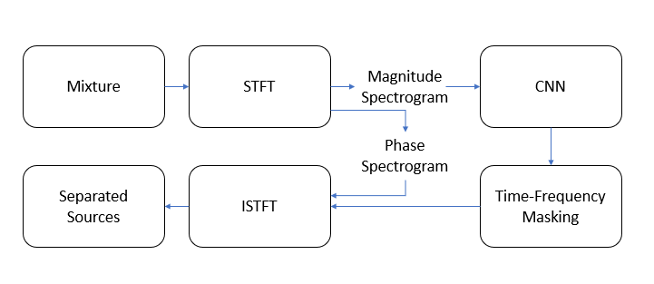
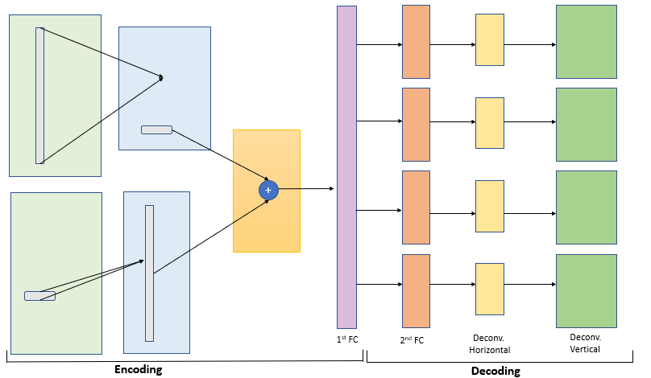

The project aimed to isolate the various instruments playing in harmony an audio file. We implemented and subsequently modified the approach proposed in this paper.

The algorithm proposed in the paper proposed to work with the magnitude spectrum of the short-time Fourier Transform (STFT) of the audio track to generate the STFTs of the desired component instrument. The algorithm involves a simple 6 layer neural network to obtain the various We used the Demixing Secrets Dataset 100 (DSD100) for training and testing purposes.

I also worked on applying the same models to segment out Nuclei from h/he stained histopathological sections of various organs. The goal was to be able to generalise nuclei detection across various organs. Finetuning of the models along with conventional image processing techniques as post-processing enabled us to improve the state of the art results of nuclei segmentation to a F1 score to 85%
Such work has direct appliciations in detection cancerous cells (eg. by getting a measure of the density of cells) in organs from their histopathology images. This work was used to host the MoNuSeg (Multi-Organ Nuclei-Segmentation) Challenge at MICCAI 2018.